plotting in Python with Seaborn: Distribution plot
![]()
Introduction
Wikipedia (2023) describe data visualization as an interdisciplinary field that deals with the graphic representation of data and information. It is a particularly efficient way of communicating when the data are processed to generate information that is shared.
It is also the study of visual representations of abstract data to reinforce human cognition using common graphics, such as charts, plots, infographics, maps, and even animations. The abstract data include both numerical and non-numerical data, such as text and geographic information.
Furthermore, it is related to infographics and scientific visualization to identify important patterns in the data that can be used for organizational decision making. Visualizing data graphically can reveal trends that otherwise may remain hidden from the naked eye.
In the following is the series of post that focuse plotting with seaborn library in Python, we will learn the most commonly used plots using Seaborn library in Python (Waskom 2021; Bisong and Bisong 2019). We will also touches on different types of plots using Maplotlib (Bisong and Bisong 2019), and Pandas (Betancourt et al. 2019) libraries. In this post we will focus on the distplot.
Loading libraries
Though most people are familiar with plotting using matplot, as it inherited most of the functions from MatLab. Python has an extremely nady library for data visualiztion called seaborn. The Seaborn library is based on the Matplotlib library. Therefore, you will also need to import the Matplotlib library.
Dataset
We are going to use a penguin dataset from palmerpenguins package (Horst, Hill, and Gorman 2020). We first need to import the dataset from the package where is stored into the R session. let us load the packages that we are glint to use in this post.
# A tibble: 344 x 8
species island bill_length_mm bill_depth_mm flipper_~1 body_~2 sex year
<fct> <fct> <dbl> <dbl> <int> <int> <fct> <int>
1 Adelie Torgersen 39.1 18.7 181 3750 male 2007
2 Adelie Torgersen 39.5 17.4 186 3800 fema~ 2007
3 Adelie Torgersen 40.3 18 195 3250 fema~ 2007
4 Adelie Torgersen NA NA NA NA <NA> 2007
5 Adelie Torgersen 36.7 19.3 193 3450 fema~ 2007
6 Adelie Torgersen 39.3 20.6 190 3650 male 2007
7 Adelie Torgersen 38.9 17.8 181 3625 fema~ 2007
8 Adelie Torgersen 39.2 19.6 195 4675 male 2007
9 Adelie Torgersen 34.1 18.1 193 3475 <NA> 2007
10 Adelie Torgersen 42 20.2 190 4250 <NA> 2007
# ... with 334 more rows, and abbreviated variable names 1: flipper_length_mm,
# 2: body_mass_gOnce the tibble file is in the environment, we need to convert from tibble data frame into pandas dataframe. Make a copy of pandas dataframe from tibble with the r. function. please note that the conversion of tibble data frame to pandas data frame must be inside the Python chunk as chunk below;
Let’s use head function to explore the first five rows on the converted penguin pandas data frame
species island bill_length_mm ... body_mass_g sex year
0 Adelie Torgersen 39.1 ... 3750 male 2007
1 Adelie Torgersen 39.5 ... 3800 female 2007
2 Adelie Torgersen 40.3 ... 3250 female 2007
3 Adelie Torgersen NaN ... -2147483648 NaN 2007
4 Adelie Torgersen 36.7 ... 3450 female 2007
[5 rows x 8 columns]The pengp dataset comprise various measurements of three different penguin species — Adelie, Gentoo, and Chinstrap. The dataset contains eight variables – species, island, bill_length_mm, bill_depth_mm, flipper_length_mm, body_mass_g, sex, and year. You do not need to download this dataset as it comes with the palmerpenguin library in R. We will use this dataset to plot some of the seaborn plots. Lets begin plotting
Alternatively, you can load the package as
species island bill_length_mm ... flipper_length_mm body_mass_g sex
0 Adelie Torgersen 39.1 ... 181.0 3750.0 Male
1 Adelie Torgersen 39.5 ... 186.0 3800.0 Female
2 Adelie Torgersen 40.3 ... 195.0 3250.0 Female
3 Adelie Torgersen NaN ... NaN NaN NaN
4 Adelie Torgersen 36.7 ... 193.0 3450.0 Female
[5 rows x 7 columns]Univariable distribution
The distplot, also commonly refers as the distribution plot, is widely used to plot a histogram of data for a specific variable in a dataset. To make this plot seaborn has a dedicated function called displot
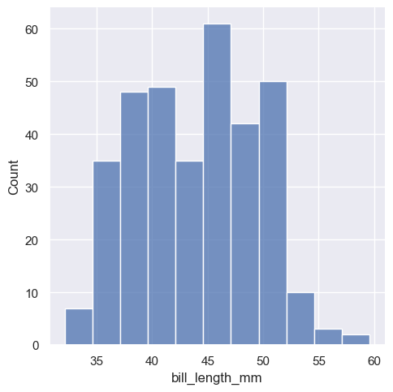
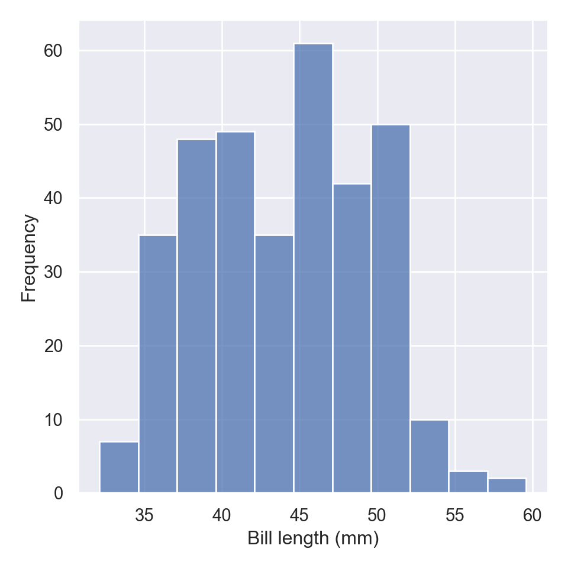
The new displot functions support the kernel density estimate line, by passing kde=True
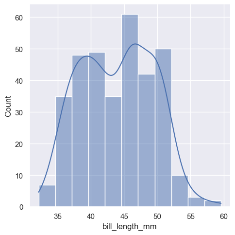
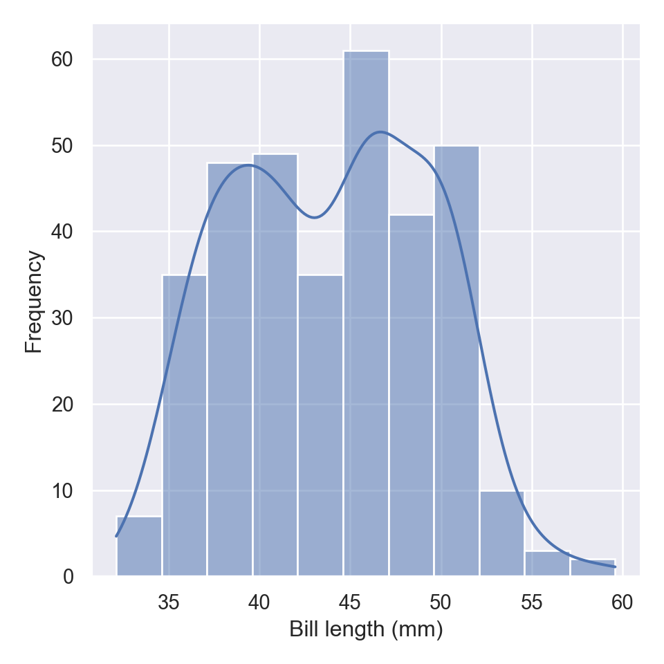
To change the distribution from counts to density, we simply parse an argument stat="density"
kdeplot
When you want to draw the density plot alone without overlay it to the histogram as presented using the displot function, seaboarn has a kdeplot function
fig = plt.figure()
sns.kdeplot(pengp.bill_length_mm)
plt.xlabel("Bill length (mm)")
plt.ylabel("Density")
plt.show()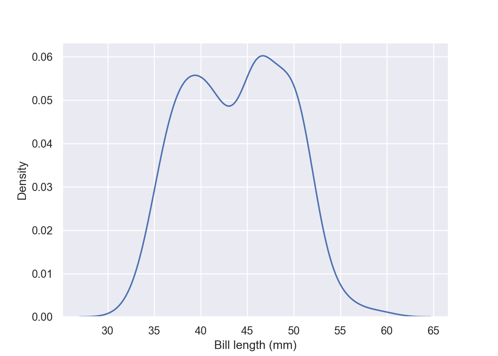
displot still can draw the kde plot, however, you need to parse an argument kind="kde" in displot:
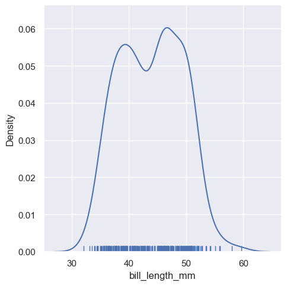
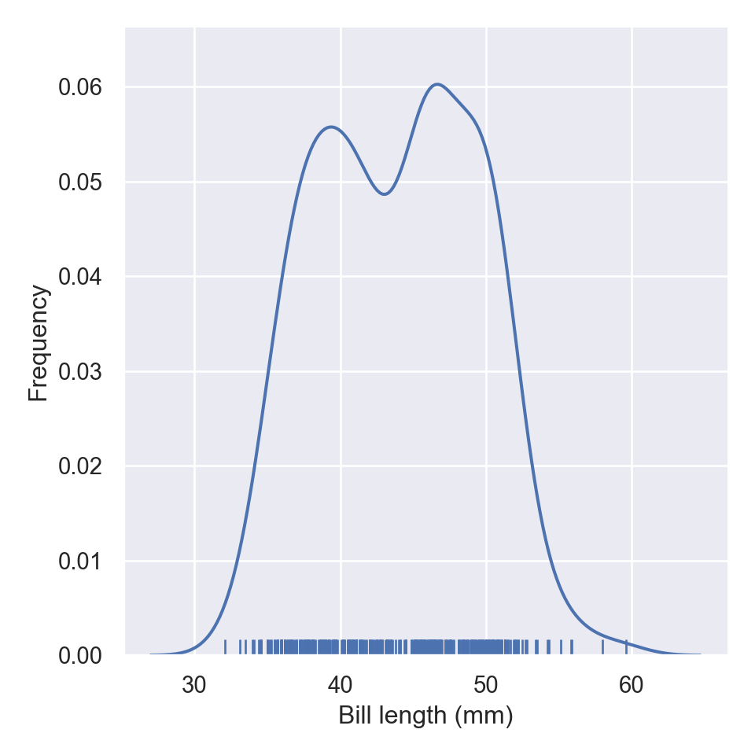
If you parse rug = True function, wll add the rug in the plots
aa = pengp[["bill_length_mm", "bill_depth_mm"]]
fig = plt.figure()
sns.kdeplot(data = aa)
plt.xlabel("Bill length (mm)")
plt.ylabel("Frequency")
plt.show()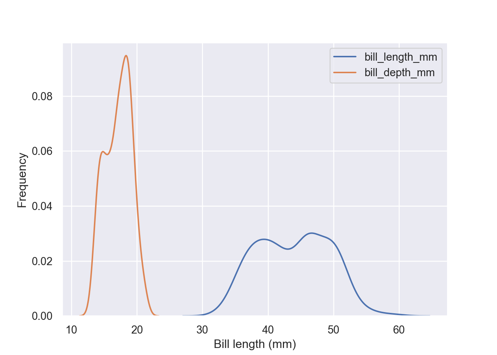
Plot conditional distributions with hue mapping of a second variable. Unlike the previous plot, for this kind you need to specify the x-variable and the hue in the dataset;
fig = plt.figure()
sns.kdeplot(data = pengp, x = "bill_length_mm", hue = "species")
plt.xlabel("Bill length (mm)")
plt.ylabel("Frequency")
plt.show()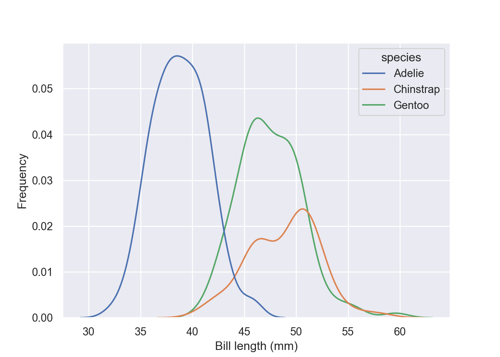
Stack the conditional distributions by simply parsing argument multiple = "stack"
fig = plt.figure()
sns.kdeplot(data = pengp, x = "bill_length_mm", hue = "species", multiple = "stack")
plt.xlabel("Bill length (mm)")
plt.ylabel("Frequency")
plt.show()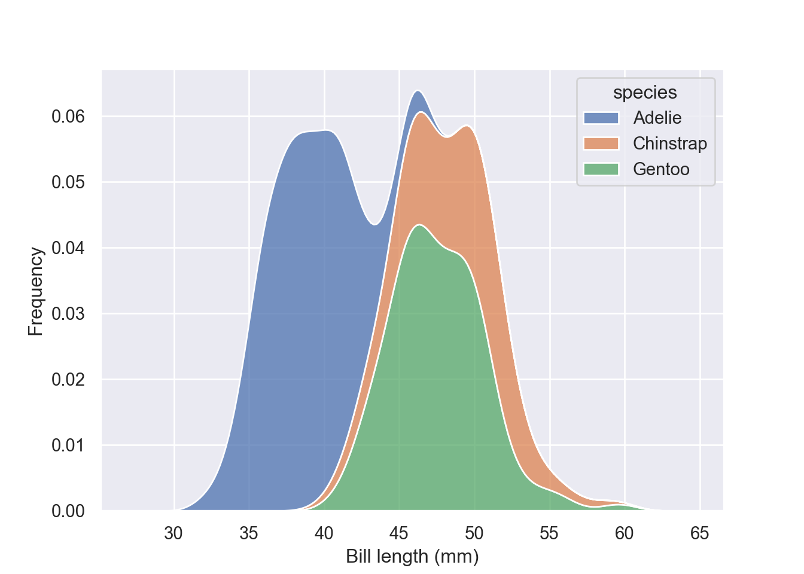
multiple = "fill" simply normalize the stacked distribution at each value in the grid
fig = plt.figure()
sns.kdeplot(data = pengp, x = "bill_length_mm", hue = "species", multiple = "fill")
plt.xlabel("Bill length (mm)")
plt.ylabel("Frequency")
plt.show()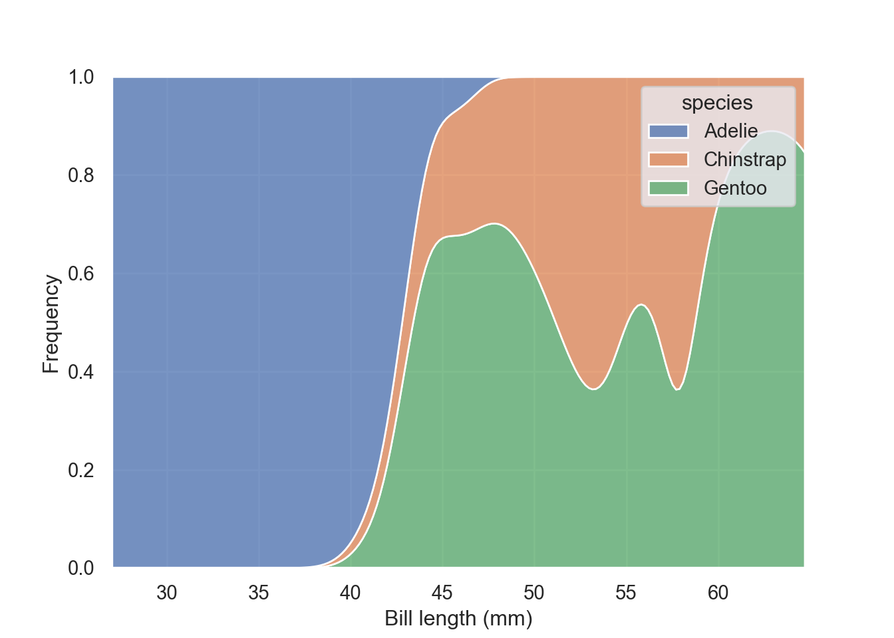
Estimate the cumulative distribution function(s), normalizing each subset:
Bivariate distribution
For bivariates, we are going to use geyser dataset. Old Faithful is a cone geyser in Yellowstone National Park in Wyoming, United States. It is a highly predictable geothermal feature and has erupted every 44 minutes to two hours since 2000. We do not need to download this dataset as it comes with the seaborn package.
duration waiting kind
0 3.600 79 long
1 1.800 54 short
2 3.333 74 long
3 2.283 62 short
4 4.533 85 longMap a third variable with a hue semantic to show conditional distributions:
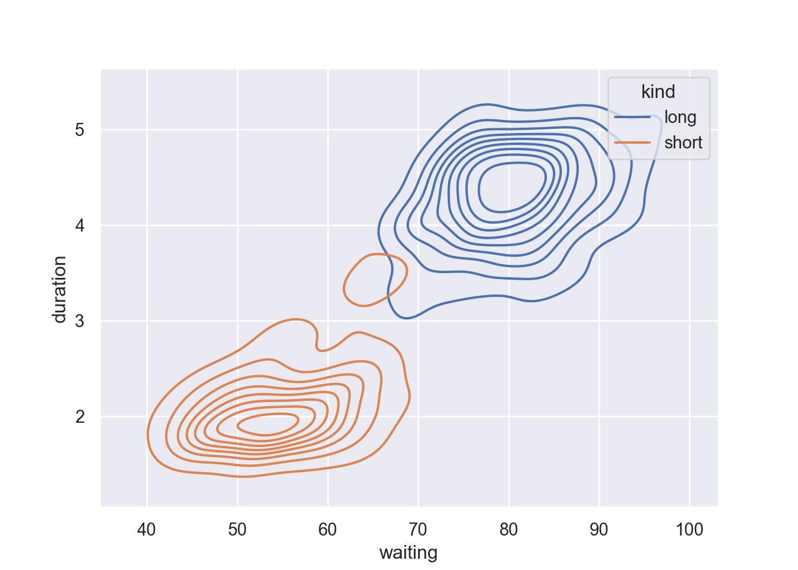
Fill the contour by parsing fill = True
fig = plt.figure()
sns.kdeplot(data=geyser, x="waiting", y="duration", hue = "kind", fill = True)
plt.show()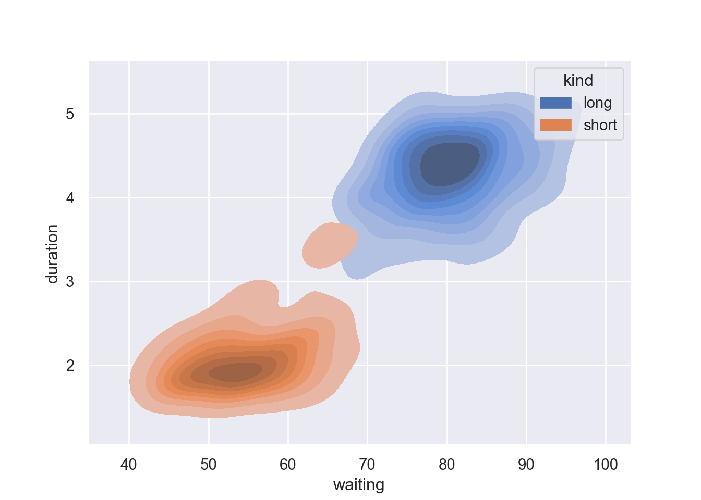
Show fewer contour levels, covering less of the distribution by parsing a levels and thresh functions in the kdeplot: